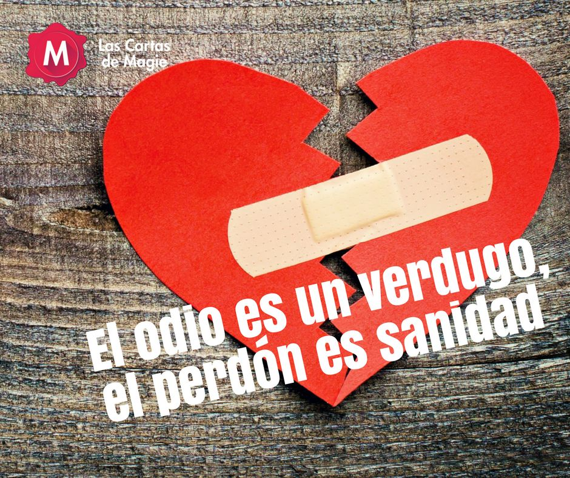

PERDON
DEFINICION SEGUN LA RAE
Dicho de quien ha sido perjudicado por ello: Remitir la deuda, ofensa, falta, delito u otra cosa.
Exceptuar a alguien de lo que comúnmente se hace con todos, o eximirle de la obligación que tiene
TEXTO BIBLICO
Efesios 4:32: "Antes sed benignos unos con otros, misericordiosos, perdonándoos unos a otros, como Dios también os perdonó a vosotros en Cristo."
PENSAMIENTO PARA REFLEXIONAR
"El perdón no es solo un regalo que le damos a los demás; es una liberación que nos otorgamos a nosotros mismos. Al soltar el peso del rencor y la ira, encontramos paz en nuestro corazón y la posibilidad de empezar de nuevo."

LIBERTAD
DEFINICION SEGUN LA RAE
Facultad natural que tiene el hombre de obrar de una manera o de otra, y de no obrar, por lo que es responsable de sus actos.
TEXTO BIBLICO
Gálatas 5:1: "Estad, pues, firmes en la libertad con que Cristo nos hizo libres; y no estéis otra vez sujetos al yugo de la esclavitud."
PENSAMIENTO PARA REFLEXIONAR
"La verdadera libertad no es solo la ausencia de ataduras, sino la capacidad de elegir el camino del bien, de vivir con propósito y de ser fiel a uno mismo. Solo cuando somos libres en nuestro interior, podemos abrazar plenamente la vida que se nos ofrece."

COMPENSACION
DEFINICION SEGUN LA RAE
Igualar en opuesto sentido el efecto de una cosa con el de otra. Compensar la dilatación de un cuerpo con la contracción de otro. Compensar las pérdidas con las ganancias, los males con los bienes. U. t. c. intr. y c. prnl. Sin.: igualar, contrapesar, nivelar, equilibrar, contrabalancear, contrarrestar. Ant.: descompensar, desequilibrar, desigualar. 2. tr. Dar algo o hacer un beneficio a alguien en resarcimiento del daño, perjuicio o disgusto que se ha causado. U. t. c. prnl.
TEXTO BIBLICO
Colosenses 3:23-24: "Y todo lo que hagáis, hacedlo de corazón, como para el Señor y no para los hombres; sabiendo que del Señor recibiréis la recompensa de la herencia; porque a Cristo el Señor servís."
PENSAMIENTO PARA REFLEXIONAR
"La compensación no siempre llega de la manera que esperamos. A veces, las recompensas más valiosas se encuentran en el crecimiento personal, en las relaciones construidas y en la paz interior que cultivamos. Cada esfuerzo sincero deja una huella, y aunque no siempre sea visible, el impacto es profundo."

RESTAURACION
DEFINICION SEGUN LA RAE
1. tr. Recuperar o recobrar. 2. tr. Reparar, renovar o volver a poner algo en el estado o estimación que antes tenía. 3. tr. Reparar una pintura, escultura, edificio, etc., del deterioro que ha sufrido.
TEXTO BIBLICO
Joel 2:25: "Y os restituitaré los años que comió la oruga, el saltón, el revoltón y la langosta, mi gran ejército que envié contra vosotros."
PENSAMIENTO PARA REFLEXIONAR
"La restauración es un proceso que nos enseña a levantarnos de nuestras caídas y a encontrar belleza en las cicatrices. A veces, lo que se rompe puede ser reparado de maneras que no imaginábamos, convirtiendo el dolor en fortaleza y las pérdidas en nuevas oportunidades."
SANIDAD
DEFINICION SEGUN LA RAE
1. f. Cualidad de sano. Sin.: salud. 2. f. Cualidad de saludable. Sin.: salubridad, higiene, limpieza. Ant.: insalubridad. 3. f. Conjunto de servicios gubernativos ordenados para preservar la salud del común de los habitantes de la nación, de una provincia o de un municipio.
TEXTO BIBLICO
Santiago 5:15: "Y la oración de fe salvará al enfermo, y el Señor lo levantará; y si hubiere cometido pecados, le serán perdonados."
PENSAMIENTO PARA REFLEXIONAR
"El perdón es un bálsamo que sana las heridas del alma. Cuando liberamos a otros y a nosotros mismos del peso del rencor, permitimos que la sanidad fluya en nuestras vidas. No solo sanamos nuestras relaciones, sino que también encontramos paz y renovación en nuestro interior."
